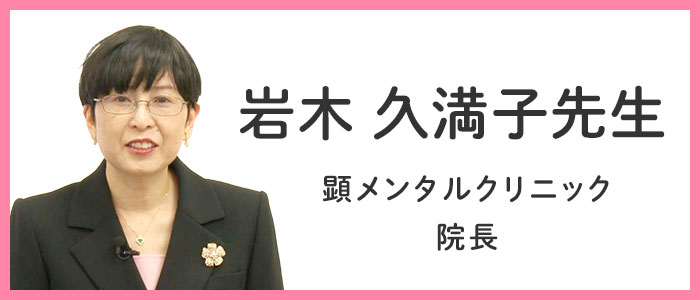

第108回心の健康ビデオセミナー
社会で神経質を活かすには
動画公開期間
2026年8月28日（金）13:30〜9月11日（金）12:00
※2週間の期間限定配信です。
視聴動画
講師

岩木 久満子先生（顕メンタルクリニック 院長）
講演内容
社会で神経質を活かすには
■配信動画は分割して配信予定です。
- 8/28〜9/11
神経質性格とは - 8/29〜9/11
森田療法について - 8/30〜9/11
社会で神経質性格を活かす（症例） - 8/31〜9/11
神経質性格を活かすために
その他
- 視聴先：YouTube公式チャンネル
- 視聴料：無料
- お問合せ：TEL:（06-6809-1211）又はお問合せ
当財団・心の健康セミナー係まで - 主催：公益財団法人メンタルヘルス岡本記念財団